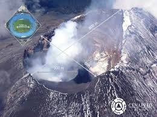
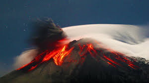
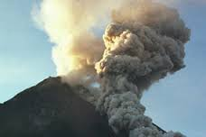

¿DONDE ESTA SU UBICACION?

Es un volcán activo localizado en el centro de México, en los límites territoriales de los estados de Morelos, Puebla y México. Se localiza a unos 72 km al sureste de la Ciudad de México, 43 km de Puebla, 63 km de Cuernavaca, y 53 km de Tlaxcala.
Tiene una forma cónica simétrica y está unido por la parte norte con el Iztaccíhuatl mediante un paso montañoso conocido como Paso de Cortés. El volcán tiene glaciares perennes cerca de la boca del cono, en la punta de la montaña.
El paisaje en la zona que rodea al Popocatépetl contiene varios tipos de ecosistemas con rica variedad de flora y fauna. Hay bosques mixtos de pino, oyamel y encino, donde coexisten hasta 1,000 especies de plantas. Sobre el cono, principalmente cerca de la boca, se encuentran glaciares que durante los últimos años han disminuido.
El Popocatépetl esta ubicado en los estados de Morelos, Puebla (45 kilometros) y el Estado de México( a 55 kilometros). Al sur de la Sierra Volcánica Transversal que constituye la espina dorsal del Altiplano Mexicano.En el Estado de México colinda con los municipios: Tlamanalco, Amecameca, Atlauta y Ecatzingo.Con el estado de Morelos colinda específicamente con el municipio de Tetela del Volcán.Por la parte de Puebla colinda con Huejotzingo, San Salvador el Verde, Domingo Arenas, San Nicolás de los Ranchos y Tochimilco.
